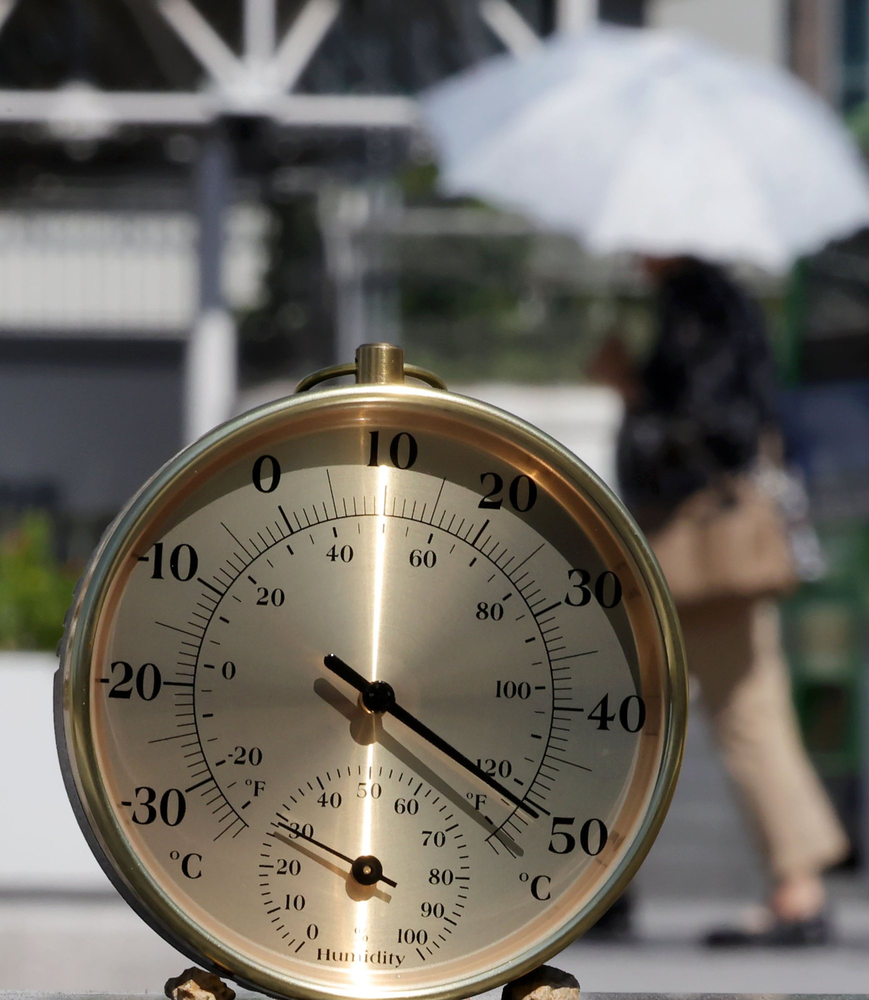
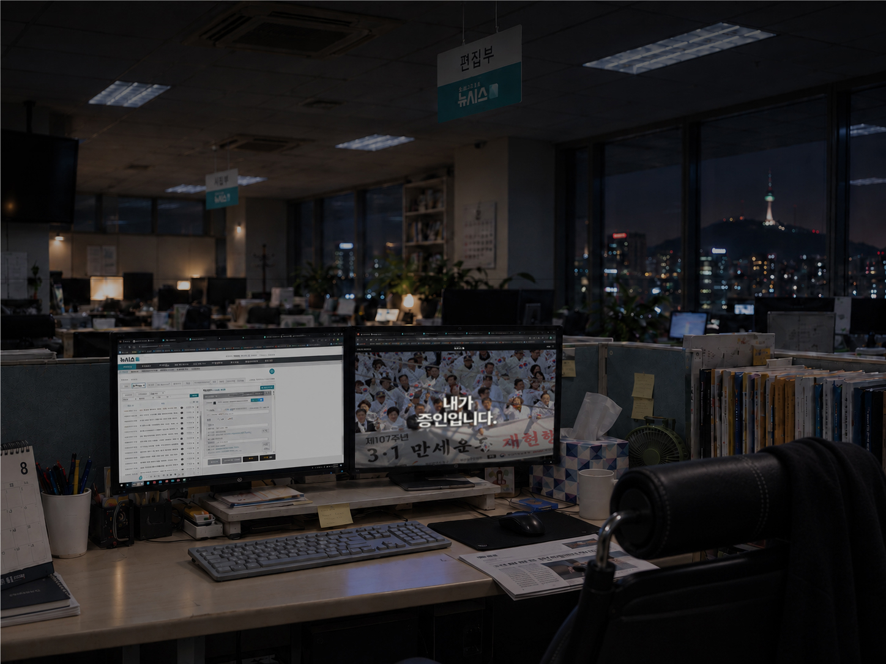
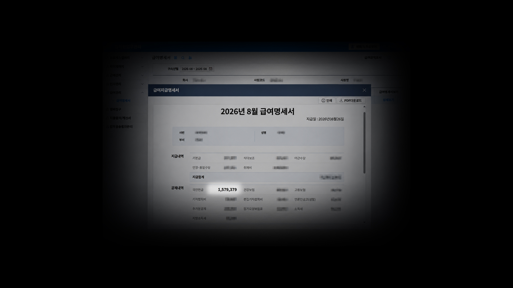
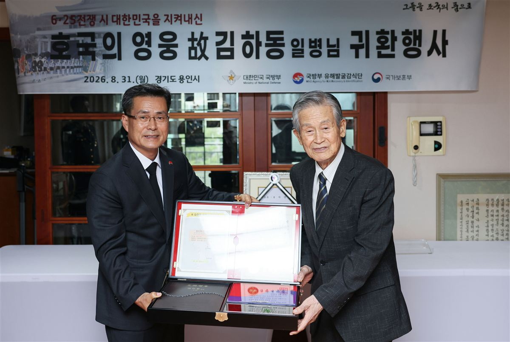

편집
숫자에 가려지고,
속보에 묻힌 이슈.
편집#이 끌어올립니다.
어떤 뉴스가 궁금하세요?
16개의 이야기호르무즈가 멈추면
유조선에서 세계 석유로, 다시 한국의 물가로. 멀리 있는 바다가 우리의 하루에 도착하는 경로를 따라갑니다.
이자가 범인입니다
기준금리가 움직인 뒤 내 통장에서 무슨 일이 벌어지는지, 매달 빠져나가는 이자의 흐름으로 확인합니다.
대한민국, 준비됐나요?
경보 이후의 5분. 엘리베이터와 계단, 창문과 건물 안쪽, 자동차와 대피시설 사이에서 직접 선택합니다.

당신의 온도
집에서 일터까지, 주거와 냉방, 이동과 노동 조건에 따라 달라지는 폭염의 하루를 직접 계산합니다.
120%의 이강인
어디서 뛰든 팀을 위해 120%. 이강인을 직접 배치하고 위치에 따라 달라지는 공격의 길을 살펴봅니다.
아이가 자라는 동안 주변은 얼마나 사라질까요
부모 10명의 목소리와 인구 통계로 아이 곁의 놀 공간, 병원, 돌봄과 교육을 살펴봅니다.
이 집, 살 수 있겠습니까?
가진 돈과 소득으로 살 수 있는 집의 범위를 확인하고, 집을 산 뒤 매달 남는 생활비까지 계산합니다.
내가 증인입니다.
광복 전후의 날짜와 피해자들의 증언, 식민지 기록을 따라 기억의 의미를 직접 경험합니다.

지금부터 당신을 대체합니다.
한국은행·한국고용정보원 자료를 바탕으로, 내 업무의 AI 노출도와 보완도를 5가지 질문으로 직접 진단합니다.

국민연금, 믿어도 돼?
출생연도와 월소득만 입력하면, 내 국민연금 예상 수령액과 수급 가능 여부, 오르는 보험료 부담을 직접 계산합니다.
환갑이면 고령? 천만예요
당신이 생각하는 '고령'의 기준을 직접 고르고, 실제 인구 통계와 지역별 데이터 위에서 그 기준이 어디쯤 있는지 확인합니다.
AT, 라리가 '2강 IN'
이강인의 자리를 직접 옮기고, 데이비드와 훌리안을 넣고, 함께 뛸 11명을 고르며 아틀레티코 마드리드의 전술 퍼즐을 체험합니다.

작은 뼈 조각으로, 가족 품에
6·25전쟁 횡성전투에서 열아홉 나이로 전사한 故 김하동 일병이 75년 만에 가족의 품으로 돌아오기까지, 발굴부터 신원확인과 귀환행사를 따라갑니다.
이곳은 悲무장지대입니다
9월 21일 서부전선 DMZ 지뢰 폭발 사고를 계기로, 남방한계선에서 군사분계선을 지나 북방한계선까지 폭 4km 비무장지대를 3D로 통과합니다.
방전된 안전
송파의 방전과 제주의 워치 강제 훼손. 신변보호 스마트워치의 기능과 지급 이후의 점검을 살펴봅니다.
회사가 고용한 SPAI
AI가 직원의 통화를 50개 넘는 항목으로 평가하는 시대. 가상 감시 시스템이 기록한 당신의 하루, 그 보고서를 뒤집어 봅니다.
나의 선택과 뉴스가 만나는 곳,편집#이 새로운 편집점이 됩니다.
편집#은 뉴시스 안재현 기자가 기획·디렉팅하는비주얼 뉴시스(VISUAL NEWSIS)의 인터랙티브 뉴스 편집샵입니다.충무로와 남산 사이에서 뉴스를 새롭게 편집하고,독자가 직접 흐름을 따라 걷고 선택한 뒤,스스로 이해하는 뉴스를 지향합니다.
팩트너머로.
사실을 넘어 이야기로.
가장 중요한 가치를 더 깊이, 더 쉽게, 더 오래 남깁니다.